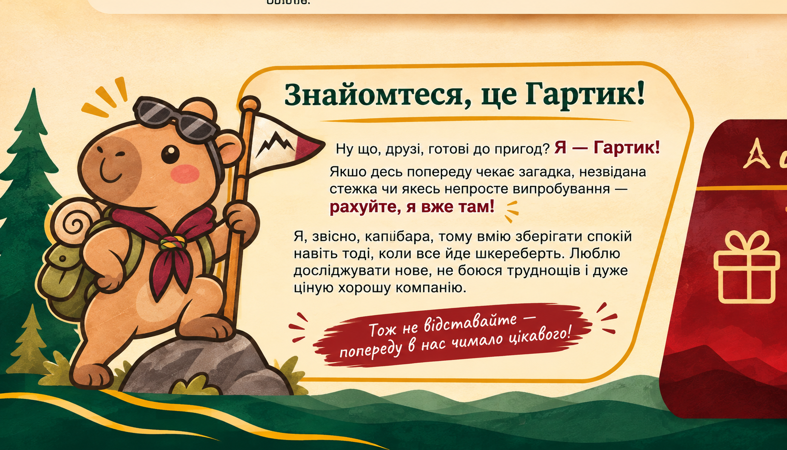

Гуртуйся
Будуй сильну команду, підтримуй і довіряй своїм.
Це простір для розвитку гуртків, дії, спільних викликів і нових можливостей.
ГАРТ об’єднує пластові гуртки Чехії навколо спільної пригоди — вчитися, мандрувати, діяти командою та створювати власну історію.
Кожен принцип — це дія, яку гурток може втілити протягом сезону.
Будуй сильну команду, підтримуй і довіряй своїм.
Бери ініціативу, долучайся та не чекай нагоди діяти.
Здобувай знання, практичні навички та новий досвід.
Втілюй ідеї, створюй зміни та відкривай нові можливості.
До участі запрошуються юнацькі пластові гуртки віком 12–16 років з осередків Праги, Брна та Острави. Основна одиниця заліку — гурток.
Перемога — це не лише місце в рейтингу. Це спільні рішення, нові вміння та досвід, який залишається з гуртком.
